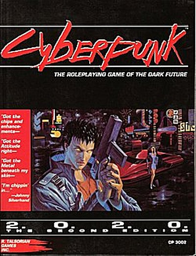
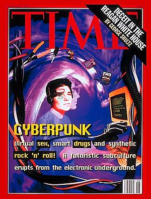
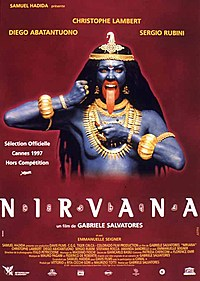
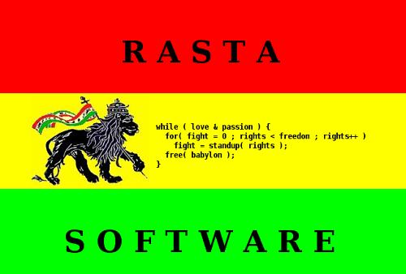

Jaromil's Musings

 printable page
printable page
printable page
printable page

- Hybrid phenomenon: scientific and humanistic aspects merge
- Criticism to Technocracy, grassroots movements reclaiming autonomy
- Immaterial values are well understood, as identity or participation
- Information is Power and it wants to be free, by its own nature
- Industrialisation is a virus tainting the future of humankind
Video excerpt Lain - Serial Experiments - episode 05
- The Prototype Era (Pre 1980) words like computer, robot, cyborg, and punk enter dictionaries; Late 60-70s counterculture; Kraftwerk electronic music.
- The Golden Era (1980-1993) Neuromancer is published; the Golden age of video games on Commodore, Atari and later IBM PCs; Blade Runner; NYC black-out due to programming error; Misguided Secret Services (Sundevil, Gladio); The WWW goes public; the GNU project is founded.
- The Mainstream Era (1993-1999) Time Magazine; Lawnmower Man, Johnny Mnemonic and more movies; Web population explodes; Microsoft Windows becomes dominant OS.
- The New Millennium Era (Now) The Matrix; George Bush; 9/11 Patriot Act; DRM developed and hacked; Google; Web 2.0 buzzword; Spam, botnets, more viruses; nanotechnology and cybernetic implants; RFID, global surveillance; data-mining; alternative grassroots OS as GNU/Linux and BSD grow in importance.
(more on cyberpunk review)

On the tracks of Dungeon & Dragons success, the passion for RPG starts affecting the imaginary of young generations in 1980 until today.

The popularity tames down socio-political aspects in public, a common pattern for underground cultures emerging as popular.
Filmmaker Craig Baldwin says in Culture Jamming 2.0:
"Jujitsu is the art of using the weight of the enemy against itself," Baldwin explains. "With corporations, sometimes the only way to beat them is not by brute force, but by symbolic agility."
Symbolic Agility is a property of independent, autonomous and non-systemic agents that, in a society of total control, can still operate as humans and inspire other humans.
Video excerpt Brazil - Mr.Tuttle clandestine help
Social injustice and systemic failure are crucial in the dialectic of cyberpunk, as in other popular movements: graffiti, skaters, hip-hop, reggae, classic punk.
As new generations empathise better with technologies, their rebellion becomes disproportional and can affect the systems functionality in unexpected ways.
Video excerpt Lain - Serial Experiments - episode 10
- Pars Destruens: viruses, reverse engineering, information leaks
- Pars Construens: free software, independent media, sharing
Open-source software was nominated as worthy of protection by the UN during the World Summit on the Information Society in 2003.
There is an analogy between online and onsite natives, in both cases colonised by mega-corporations and industrial speculators.
As the digital divide shrinks, cyberpunk spreads rapidly hybridising with different cultures in Asia, Africa and South America.


Proprietary software spreads the dependence from business companies thru the populace: whenever we share our knowledge on how to use a certain software, we make the people in need to buy the tools from merchants in order to express their Creativity.
The roots of Rasta culture can be found in Resistance to slavery. This software is not a business. This software is free as in speech and is one step in the struggle for Redemption and Freedom.

while ( love & passion ) {
for( fight = 0 ; rights < freedom ; rights++ )
fight = standup( rights );
free( babylon );
}

Jaromil's musings on http://jaromil.dyne.org
A thousand flowers will blossom!

|


|


|
 copyleft 2000 - 2009 dyne.org
foundation and respective authors. Verbatim copying
and distribution is permitted in any medium, provided
this notice is preserved.
Send inquiries & questions to dyne.org's hackers. copyleft 2000 - 2009 dyne.org
foundation and respective authors. Verbatim copying
and distribution is permitted in any medium, provided
this notice is preserved.
Send inquiries & questions to dyne.org's hackers.
|

|